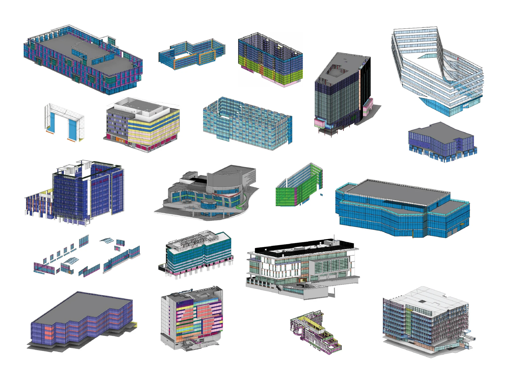
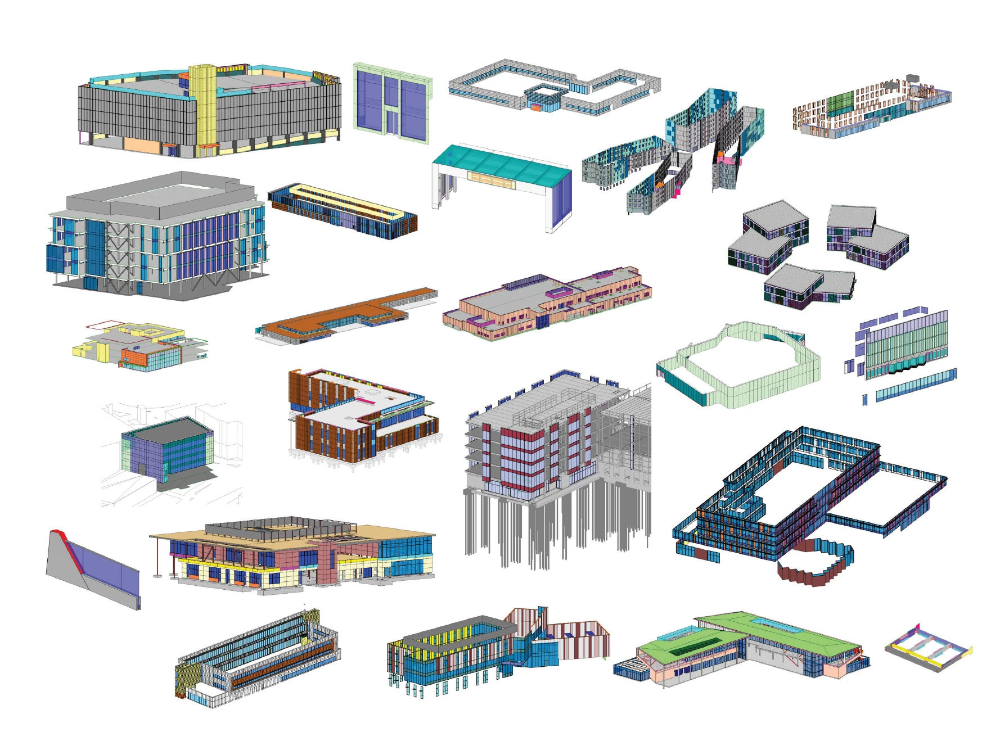

Facade Modeling & Design Assist
Show how a project model supported estimating, engineering coordination, shop drawings, or installation planning.
Add project case study ↗Capability 01
Project-specific Revit modeling and coordinated information for glazing and facade systems—from early estimating and design assist through shop drawings, fabrication support, and field installation.
Back to experiencePortfolio
Show how a project model supported estimating, engineering coordination, shop drawings, or installation planning.
Add project case study ↗Add model screenshots, clash-resolution examples, coordinated details, and a short explanation of your role.
Add project case study ↗Feature layout studies, equipment access, installation sequencing, embeds, clips, or field-verification workflows.
Add project case study ↗

Contact
For BIM, preconstruction, facade coordination, technical documentation, or automation opportunities, reach out directly.